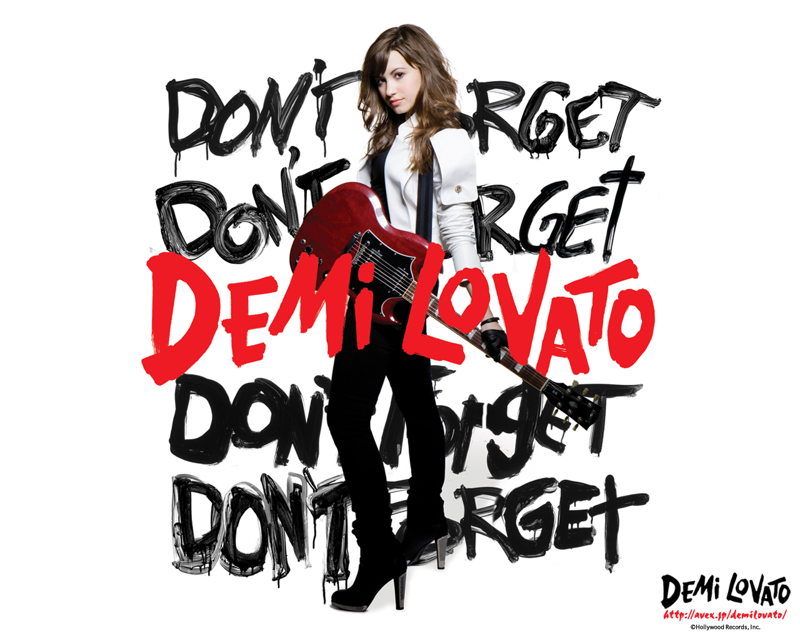

Antes de que la música de Demi fuera oficialmente lanzada, algunas de sus canciones originales como «Shadow» aparecieron en la mini serie de DC, As the Bell Rings en el año 2007. Lovato también cantó una versión de «That's How You Know» de la película Enchanted que se publicó en el DisneyMania 6 el 20 de mayo de 2008.
Antes de que la música de Demi fuera oficialmente lanzada, algunas de sus canciones originales como «Shadow» aparecieron en la mini serie de DC, As the Bell Rings en el año 2007. Lovato también cantó una versión de «That's How You Know» de la película Enchanted que se publicó en el DisneyMania 6 el 20 de mayo de 2008.
Entre junio y julio de 2008, actuó en varios House of Blues y parques por su gira Demi Live! Warm Up Tour en preparación para el lanzamiento de su álbum debut y su participación en el Burnin 'Up Tour de los Jonas Brothers. La banda sonora de la película original de Disney Channel, Camp Rock fue lanzada en junio de 2008. Demi interpretó cuatro de las canciones de la banda sonora, incluyendo «This Is Me» en dueto con Joe Jonas. «This Is Me» fue lanzado como el primer sencillo del disco, alcanzando el número nueve en el Billboard Hot 100. Lovato fue la telonera de la gira Burnin 'Up Tour de los JoBros de julio a septiembre de 2008. Varios conciertos en la gira fueron filmados como escenas de una película del concierto en 3-D titulado Jonas Brothers: The 3D Concert Experience que fue lanzado en febrero de 2009. Lovato apareció en la película interpretando «This Is Me» con Joe Jonas.
Lovato lanzó su álbum debut, Don't Forget el 24 de septiembre de 2008. El álbum debutó en el número 2 del Billboard 200 vendiendo 89 000 copias la primera semana. Desde entonces, ha vendido alrededor de 513 000 copias solo en los Estados Unidos. Lovato declaró en una entrevista que el álbum fue grabado en diez días. El álbum fue precedido por su sencillo debut «Get Back», que fue lanzado el 12 de agosto de 2008 y alcanzó el número cuarenta y tres en el Hot 100. En abril de 2009 fue lanzado el segundo sencillo, «La La Land», el cual alcanzó el número cincuenta y dos en el Hot 100. En marzo de 2009, «Don't Forget» fue lanzado como el tercer sencillo únicamente en Radio Disney y alcanzó el número cuarenta y uno en el Hot 100. El primer EP de la intérprete, Moves Me, fue lanzado en diciembre de 2008 por el sello Well Go USA, pero no bajo el apoyo de Lovato. El EP presenta las canciones grabadas por Lovato antes de firmar con Hollywood Records y algunas de su infancia.
En 2009, Lovato grabó «One and the Same» de Princess Protection Program a dueto con Selena Gómez donde ambas protagonizan la película. Demi lanzó su segundo EP titulado iTunes Live from Londres, que fue lanzado el 8 de mayo de 2009, bajo el sello discográfico de Hollywood Records, en este EP aparecen canciones de su álbum debut Don't Forget.
Lovato lanzó su segundo álbum de estudio, Here We Go Again, en julio de 2009. El álbum debutó en la primera posición del Billboard 200 vendiendo más de 108 000 copias en la primera semana. Antes del lanzamiento del álbum Lovato dijo: "Va a tener un sonido diferente, así que espero que sea acerca así. Canto mucho rock, pero esta vez quiero hacer más canciones tipo de John Mayer. Espero poder escribir con gente como él.." El álbum fue más inspirado por la música acústica que por el sonido pop rock de su álbum debut. El disco vendió alrededor de 471 000 copias en Estados Unidos y fue certificado de Oro en Brasil por la Associação Brasileira dos Produtores de Discos el 28 de mayo del 2010 en medio de una rueda de prensa en São Paulo. El primer sencillo del álbum, «Here We Go Again», lanzado el 23 de junio de 2009, se convirtió en uno de los sencillos más vendidos de Demi, y alcanzó el número quince en el Billboard Hot 100. El segundo sencillo del álbum, «Remember December», fue lanzado el 17 de noviembre de 2009, pero solo logró llegar al número ochenta en Reino Unido.
La gira Summer Tour 2009 comenzó el 21 de junio de 2009 en Hartford, Connecticut y concluyó el 24 de agosto en Mánchester, Nuevo Hampshire, misma con la que regresaría el 29 de octubre en el Fall Tour con 3 conciertos más, debido a que se cancelaron tres fechas de su gira por razones desconocidas. Lovato apareció en el disco Smile Kid de la banda We the Kings. El álbum fue lanzado el 8 de diciembre de 2009. En el álbum, contribuye como vocalista invitada en el sencillo «We'll Be a Dream», lanzado en marzo de 2010. El vídeo musical de la canción fue lanzado el 22 de abril a través MTV.
El 30 de marzo de 2010 se anunció a través de su página oficial de MySpace el South America Tour 2010, como su primera gira internacional de encabezada. La gira comenzó el 23 de mayo de 2010 en Santiago de Chile, y concluyó el 28 de mayo en São Paulo, Brasil. Los Jonas Brothers anunciaron su World Tour 2010 con Lovato y el elenco de Camp Rock 2: The Final Jam de invitados especiales. La gira visitará varios países y continentes, incluyendo toda Norteamérica y algunos países de Sudamérica y Europa. La parte Americana de la gira comenzó en agosto de 2010 en Tinley Park, Illinois y la abandonó el 29 de octubre a raíz de su ingreso a rehabilitación, habiendo presentado 34 conciertos.
Lovato también aparece en dos álbumes de bandas sonoras en 2010. Ella grabó canciones para el álbum, Camp Rock 2: The Final Jam, que fue lanzado en agosto de 2010 debutando en el número tres en el Billboard 200 con más de 41 000 ejemplares de ventas solo la primera semana, hasta ahora en el Billboard 200 alcanzó alrededor 300 000 copias. La banda sonora de su serie, Sonny with a Chance fue lanzada el 5 de octubre de 2010, desprendiendo principalmente el sencillo de la banda sonora, «Me, Myself and Time» que también sirvió para promocionar la línea de ropa del personaje de su serie, Sonny Munroe.
Demi declaró en julio de 2010 que el trabajo de su tercer álbum había comenzado, y dijo: «El nuevo álbum, hasta el momento tiene poco pop y más R&B. Es un poco más personal. Tiene un sonido diferente a lo que he hecho anteriormente y estoy realmente emocionada de ver cómo resulta. Keri Hilson y Rihanna son mi inspiración para el sonido de ahora. También he escrito la mitad de una canción en español. Resultó realmente increíble, así que espero que mis fans les encante también».El álbum planeaba lanzarse en la primavera de 2011 de acuerdo a una declaración, pero su ingreso a rehabilitación cambió la fecha.
Finalmente, el 12 de julio de 2011, fue lanzado el primer sencillo «Skyscraper» de su tercer álbum Unbroken lanzado el 20 de septiembre del 2011. El álbum vendió más de 96 000 copias en su primera semana, debutando en el número cuatro en Billboard 200. Hasta abril de 2013, vendió alrededor de 448 000 copias en los Estados Unidos. El 17 de septiembre de 2011, Demi hizo su primer show, después de su salida de rehabilitación en Nueva York y luego, el 23 de septiembre en Los Ángeles. Demi Lovato confirmó que realizaría una gira mundial para la promoción de Unbroken, titulada A Special Night with Demi Lovato, la cual empezó en la ciudad de Detroit el 16 de noviembre del 2011, y se extendería a 2012 por Iberoamérica. Su segundo sencillo iba a ser «Who's That Boy», pero debido al embarazo de la cantante Dev, se decidió que el segundo sencillo sería «Give Your Heart A Break».
Demi estuvo por primera vez en los Latin Grammy 2011, interpretando durante la entrega una canción en dueto «Solamente Tú» junto a Pablo Alborán, un gran apoyo para promocionar su más reciente álbum por Latinoamérica.52 Según la revista Billboard, Demi Lovato se encuentra planeando para un futuro, un álbum completamente en español. Al parecer en el álbum se incluirán éxitos de Demi Lovato traducidas al español. No está confirmado si se dará esta gran sorpresa de lanzamiento, falta que la cantante lo confirme personalmente Después de su rehabilitación Demi Lovato ha demostrado ser más fuerte, más madura y luchadora. En 2011, su itinerario musical estuvo bastante apretado, interpretó su tema «Skyscraper» en varios programas como America's Got Talent, Dancing with the Stars, Vh1 Do Something! Awards entre otros. Demi Lovato interpretó el himno nacional de los Estados Unidos en el "Rangers Ballpark de Arlington", Texas, el lunes (24 de octubre de 2011) por la noche. Demi en medio de su A Special Night with Demi Lovato, se presentó el viernes 9 de diciembre en el evento Z100 Jingle Ball en Nueva York junto a Lady Gaga y Kelly Clarkson, Demi abrió el evento con su interpretación de «All Night Long».
Además de todo, Demi fue invitada al Festival Verano Iquique 2012, que se realiza anualmente en la ciudad Iquique de Chile en el Estadio Tierra de Campeones el 4 de febrero del 2012 y durante el año continuó su gira con varias presentaciones en Estados Unidos, a la vez que grababa episodios para la segunda temporada de The X Factor (USA).
El 4 de abril de 2012, Lovato anunció en Twitter que ya estaba escribiendo para su cuarto álbum de estudio, diciendo que estaba "muy emocionada de empezar a escribir para mi cuarto álbum", y que "esta vez, no hay frenando..". Lovato dijo en una entrevista con KOKO POP UK en abril de 2012 que la música es actualmente su "máxima prioridad", pero que ella es "una especie de conseguir las ganas de volver a actuar, así que ya veremos lo que viene después". En una entrevista con la revista Fabulous UK, Lovato no volverá a actuar hasta que confía ella misma plenamente. "Tengo que estar segura de mi cuerpo antes de irme de nuevo frente a la cámara. Cualquier persona en la recuperación de un trastorno alimenticio se encuentra en la activación, y no estoy lista", dice ella.
El 1 de abril de 2013, confirmó que el álbum se titularía Demi y que se publicaría el 14 de mayo El primer sencillo «Heart Attack» debutó en el número 12 en los Estados unidos, Billboard Hot 100. En su primera semana vendió 215 000 copias y se convirtió en el tercer sencillo con mayor ventas en inicios de una semana del 2013, solo detrás de Suit & Tie de Justin Timberlake, y The Way de Ariana Grande. La canción terminó alcanzando el puesto 10 del Hot 100, siendo la tercera entrada de la cantante a las diez más vendidas. Dentro de los créditos de composición y producción se encuentran The Suspex, Ryan Tedder, Carl Falk, Jonas Jeberg, Matt Rad y Rami Yacoub. Respecto al álbum, Lovato anticipó en una rueda de prensa: «¡Es mejor que cualquier cosa que he hecho! Experimenté con una variedad de sonidos diferentes y derramé mi corazón al componer estas canciones. ¡Estoy muy emocionada de que todos finalmente tengan la oportunidad de escucharlas!». «Made in the USA» es el segundo sencillo, su vídeo musical fue co-dirigido por Lovato y se estrenó el 17 de julio de 2013. El 29 de septiembre de 2013 «Neon Lights» fue elegido como tercer sencillo del álbum. El 14 de mayo de 2014 Really Don't Care fue elegido como el cuarto y último sencillo del álbum, este contó con la colaboración de la cantante británica Cher Lloyd, se convirtió en el tercer hit número uno de Lovato en el Dance Club Songs y debutó en el Billboard Hot 100 en el número 98, antes de subir a la posición máxima en el número 26. Tiempo antes se anunció que Demi comenzaría una gira en 2014 por Estados Unidos y Canadá, teniendo de teloneras a Fifth Harmony, Little Mix y Cher Lloyd. La gira se llamaría «The Neon Lights Tour». La cantante anunció que también irá a México, Chile, Argentina, Ecuador y Brasil.
Prestó su voz al tema de la película The Mortal Instruments: City of Bones llamado «Heart By Heart», bajo el sello discográfico Republic Records. También le prestó su voz al tema principal de la película Frozen, llamado Let It Go, con una versión más popular y juvenil, bajo el sello Walt Disney Records.
El 18 de mayo de 2014, "Somebody to You" en colaboración con Demi fue lanzado como el cuarto sencillo del álbum debut del grupo británico The Vamps, Meet the Vamps. Siendo actualmente la canción más exitosa del grupo. El 29 de mayo, anunció su cuarta gira de conciertos (y primera gira mundial, que visitó 25 ciudades), el Demi World Tour. En noviembre de 2014, Lovato se presentó como acto de apertura en la etapa europea del Sex and Love Tour de Enrique Iglesias. También trabajó con su amigo de toda la vida Nick Jonas en un canción llamada "Avalanche" para su álbum homónimo titulado Nick Jonas, lanzado en noviembre de 2014. Lovato colaboró en "Up", el segundo sencillo del cuarto álbum de estudio del cantante británico Olly Murs, Never Been Better.
Lovato lanzó una versión de lujo de su cuarto álbum de estudio, que incluyó 7 nuevas pistas, que consta de 4 actuaciones en vivo y 3 canciones. Una de estas canciones es la colaboración con Olly Murs titulada "Up", otra es la versión de Lovato de la canción "Let it Go" y la última una nueva canción titulada "I Hate You, Don't Leave Me". Lovato dio a conocer un vídeo musical de su canción "Nightingale" el 24 de diciembre de 2014, como un regalo de Navidad para sus fanes.
El quinto álbum de Lovato, Confident, fue lanzado el 16 de octubre de 2015, y recibió críticas positivas de los críticos de la música. El álbum debutó en el número dos en el Billboard 200 con ventas de 98.000 copias en su primera semana. Durante la producción del álbum, Lovato comentó: "Yo ya he empezado a grabar para mi nuevo álbum, y tengo planes de grabar durante la gira el sonido simplemente se convierte en todo lo que he sido y todo lo que quiero ser." Ella añadió: "Nunca he estado tan segura de mí misma como artista cuando llegue a la confianza, pero no sólo las cosas personales, pero exactamente lo que yo quiero que mi sonido sea y lo que sea yo capaz de hacer y este álbum me dará la oportunidad de mostrar a la gente lo que realmente puedo hacer." En mayo de 2015, Billboard reveló que Lovato estuvo en el proceso de iniciar un contrato con un nuevo sello discográfico, Island Records y crear uno, Safehouse Records, de la que será co-propietaria. El sello será una alianza entre ella, Nick Jonas, y el mánager de Lovato Phil McIntyre, y formará parte de un nuevo acuerdo de colaboración con el sello discográfico Island. Confident fue lanzado a través del nuevo acuerdo compartido. Esta fue la segunda empresa de Lovato con varias etiquetas en su carrera; ella era antes parte de Jonas Records, una asociación de UMG/Hollywood/Jonas Brothers, la cual ya esta desaparecida, la asociación creada para lanzar Confident fue UMG/Hollywood/Island la cual fue únicamente para lanzar el quinto álbum de Lovato. Lovato terminó su contrato con Hollywood Records en diciembre de 2015.
Lovato lanzó el primer sencillo de Confident titulado "Cool for the Summer" el 1 de julio de 2015, el cual alcanzó el número 11 en el Billboard Hot 100 El 18 de septiembre de 2015, la canción "Confident" fue lanzada como el segundo sencillo del álbum, este alcanzó el número 21 en la lista ya mencionada. El 17 de octubre de 2015, Demi realizó un medley de "Cool for the Summer" y "Confident" además de interpretar "Stone Cold" en Saturday Night Live durante la cuadragésima primera temporada.
Lovato colaboró en el relanzamiento de "Irresistible", el cuarto single del sexto álbum de estudio de Fall Out Boy, American Beauty/American Psycho. Lovato lanzó el vídeo musical de su canción R&B "Waitin for You", con la rapera estadounidense Sirah el 22 de octubre de 2015. El 26 de octubre de 2015, Lovato y Nick Jonas anunciaron que iban a ir de gira juntos en el Future Now Tour, visitando 44 ciudades de los Estados Unidos, también se confirmaron 6 fechas para Brasil. Ella fue premiada el 11 de diciembre de 2015 con el primer 'Rulebreaker Award' de Billboard por ser una verdadera fuerza en la industria de la música, así como un artista que está plenamente en control de su carrera durante el uso de su historia personal para inspirar y empoderar a otros, a las niñas y las mujeres en particular.
Durante noviembre de 2015 se dio a conocer que Lovato participaría en la película "Charming", al igual que se le dio la responsabilidad de ser la productora de la banda sonora de la película, la cual saldrá al aire en 2016. Entre los cantantes que trabajaron con Lovato en lo musical se encuentran; Avril Lavigne, Ashley Tisdale, G.E.M., Sia y Patrick Stump. El 5 de enero de 2016 salió a la luz el vídeo musical de la canción en la cual colabora Lovato, "Irresistible".
En febrero de 2017, Lovato fue productora ejecutiva de un documental, Beyond Silence, que sigue a tres personas y sus experiencias con enfermedades mentales como el trastorno bipolar, la esquizofrenia, la depresión y la ansiedad. Lovato apareció en la canción "No Promises" de Cheat Codes, lanzada en marzo de 2017, e "Instruction" de Jax Jones junto con Stefflon Don, lanzada en junio de 2017. En 2017, Lovato se incluyó en la lista anual de Time de las 100 personas más influyentes. El 8 de mayo de 2017, anunció una colaboración con la línea de ropa deportiva Fabletics para apoyar la iniciativa de las Naciones Unidas, Girl Up.
En julio de 2017, Lovato lanzó "Sorry Not Sorry" como el primer single de su sexto álbum, que se convirtió en su canción más alta en Nueva Zelanda y los Estados Unidos en el número 6 y Australia en el número 8. El álbum titulado Tell Me You Love Me, salió a la venta el 29 de septiembre y se estrenó en el número tres de la lista Billboard 200 de EE. UU. Con ventas de 48,000 copias en la primera semana. Recibió críticas positivas de los críticos musicales. El 17 de octubre, Lovato lanzó un documental titulado Demi Lovato: Simply Complicated to YouTube. El 26 de octubre de 2017, Lovato y DJ Khale anunciaron que se embarcarían en una gira denominada Tell Me You Love Me World Tour.
El 17 de noviembre de 2017, Lovato lanzó una canción titulada "Échame la culpa" con el puertorriqueño Luis Fonsi que fue todo un éxito. Luego, en marzo de 2018, Demi colaboró con DJ Khaled en la canción I Believe para la película A Wrinkle in Time. En mayo de 2018, tras la especulaciones, hizo su gran sueño, cantar con Christina Aguilera en un dúo para el álbum Liberation llamado Fall in Line, que va sobre el feminismo, aquí Demi y Christina muestran sus capacidades vocales, y presentaron esta canción en los Billboard Music Award del 2018 siendo la actuación más esperada por el público. En el mismo mes, sacó su colaboración con Clean Bandit llamada Solo, una canción muy veraniega y muy movida comparada con el álbum de Demi y sus trabajos de este año. En junio de 2018 lanzó Sober, una canción que habla sobre la lucha que tiene contra el alcoholismo y el hecho de haber recaído en esta adicción de la cual se consideraba sana desde el 15 de marzo de 2012.
Su primer álbum Don't Forget, se basó en géneros pop rock y power pop, ya que los Jonas Brothers ayudaron a componer algunas de sus canciones. Demi dijo que para la composición del ritmo, Britney Spears, Christina Aguilera, Aretha Franklin y Gladys Knight fueron sus influencias. Demi dijo: "La música no es necesariamente el sonido como el de Aretha, pero hay algunas canciones en que se puso mucho corazón y alma, y ella realmente me inspiró" Para Here We Go Again, tuvo poco pop rock y más soul, Lovato trabajó con uno de sus ídolos John Mayer en la canción "World of Chances", y fue su inspiración principal. En Unbroken, fue el álbum en que Demi cambió su ritmo, está basado en el R&B, pop y la electrónica, influenciada por cantantes como Rihanna y Keri Hilson. Lovato trabajó con los productores Timbaland, Ryan Tedder, Rock Mafia entre otros.